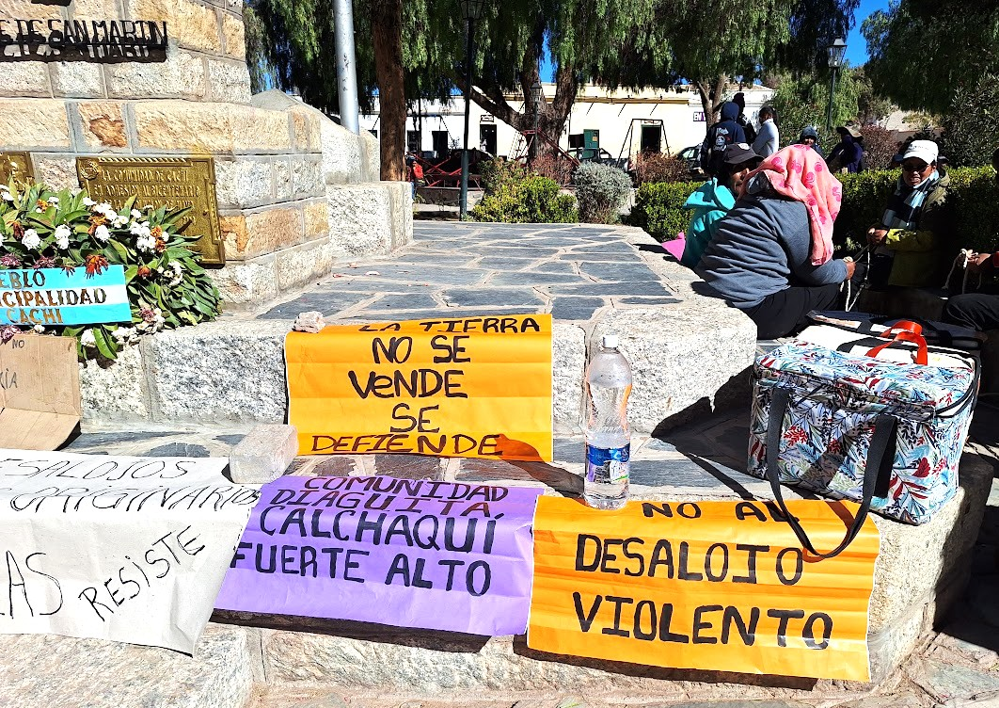
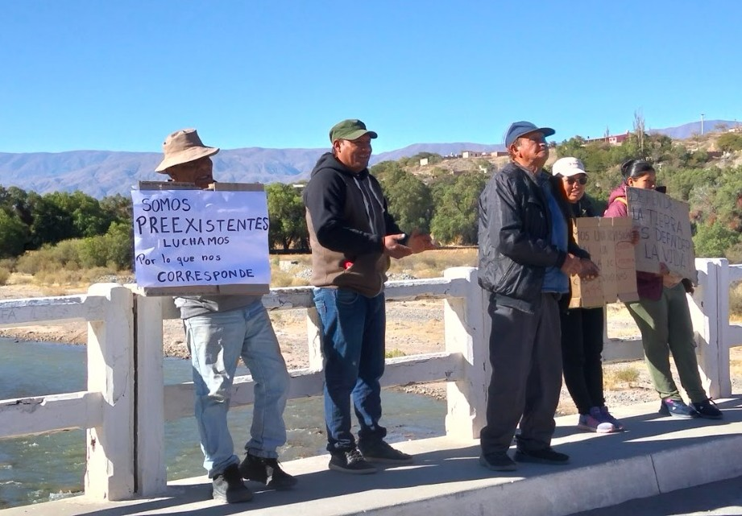
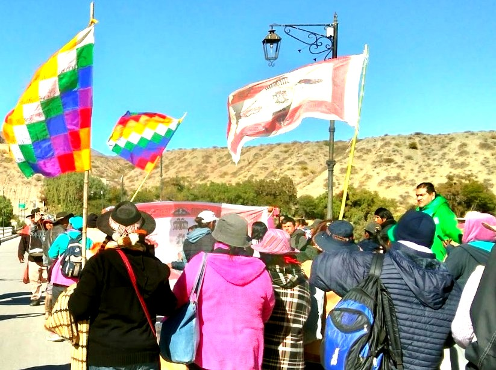

El 12 de junio de 2026, más de 500 efectivos de la policía de Salta llegaron a la comunidad Diaguita Calchaquí Las Pailas, en Cachi, para ejecutar un desalojo que, según denuncian, respondía a una orden por cuatro hectáreas pero terminó afectando a más de 40. Sesenta familias quedaron desplazadas, veinticuatro perdieron sus viviendas y el operativo se extendió más allá del horario establecido en el fallo judicial, sin notificación previa a las familias.
Liz, miembro de la comunidad, detalla las irregularidades del procedimiento, la resistencia que sostienen y la conexión profunda entre la defensa del territorio y de los glaciares del nevado de Cachi. Su voz es un testimonio de la lucha ancestral por la tierra, pero también un llamado a toda la sociedad a comprender que lo que ocurre en Cachi no es un conflicto aislado.

Foto: Alejandra Pastor
Liz:: Hola, buen mediodía. Hoy, tras movilizarnos firmemente por la recuperación de nuestros territorios, nos encontramos en estado de alerta permanente. El pasado 12 de junio sufrimos un desalojo sumamente violento: un operativo de más de 500 efectivos policiales arrasó con viviendas, corrales y cultivos, afectando a 60 familias cuando la orden judicial solo autorizaba desalojar 4 hectáreas.
Pero la lucha no terminó ahí. Gracias al enorme repudio social y a la presión sostenida que mantuvimos en la calle, la Justicia tuvo que dar marcha atrás y ordenó la restitución de la mayor parte de las tierras a las familias afectadas. Con esto se reconoció formalmente que el operativo fue un abuso y que se avanzó sobre predios que jamás estuvieron incluidos en la sentencia.
AP: ¿Qué hay detrás de este desalojo? ¿Por qué creen que se dio este operativo tan violento y desproporcionado?
Liz: Entendemos que no solo tiene que ver con el despojo territorial, sino también querer allanar el camino para la explotación de esas tierras, la extranjerización de esas tierras. Nosotros estos días tuvimos viendo que se hicieron exploraciones en los nevados, en esas exploraciones dice que hay tierras raras, que hay litio. Por eso nosotros más que nunca nos reafirmamos, no solo como poseedores de los territorios, sino también como recibimos la herencia de nuestros abuelos y de nuestros ancestros de ser los cuidadores de esos cerros, los cuidadores de esas montañas que son las que nos comunican y nos permiten tener el vínculo entre el cielo y la tierra, el vínculo espiritual con nuestros ancestros y con nuestra identidad.
AP: ¿Tienen alguna acción legal iniciada para frenar este avance? ¿Qué irregularidades identifican en el procedimiento judicial?
Liz: Hoy se está pidiendo a los diputados que presenten, que traten y que aprueben el jury a la jueza, porque el procedimiento estuvo muy viciado, lleno de irregularidades. Primero, la jueza ganó una causa que estaba prescripta para hacer la orden de desalojo. Después, no se llevaron adelante la forma ni los tiempos legales, no se notificó a ninguna familia del desalojo, cuando la justicia dice que tiene que por lo menos haber diez días de anticipación. Los tiempos tampoco estuvieron establecidos de la mejor manera. Incluso en el fallo decía que el desalojo tenía que efectuarse en los horarios de oficina, hasta la una y media, sin embargo el desalojo lo empezaron a las dos de la tarde.

Foto: Alejandra Pastor
Entendemos también que hay un informe que elevó el juez de paz de acá de Cachi diciendo que en ese lugar no había nada, que no habían familias, que no había cultivo. Y la nada no existe. Hay familias que quedamos despojadas en nuestro espacio de trabajo, pero familias también quedan despojadas en sus viviendas. Hay personas con discapacidad que están sufriendo, porque no están durmiendo, se les alteró la rutina, y eso los lleva a tener algunos brotes. Por eso también queremos agradecer el acompañamiento de los psicólogos del hospital, que han estado siguiendo muy de cerca a las personas adultas mayores y a algunas personas que tienen enfermedades crónicas. Esas familias son las que estamos ahí sosteniendo para que no nos saquen.
Liz: Nosotros sabemos y heredamos de nuestros abuelos el cuidado del nevado de Cachi, que es una montaña que tiene una de las reservas más grandes de glaciares en la provincia. Es una reserva de hielo que además abastece de agua a los ríos que irrigan casi todo el valle Calchaquí. La defensa del nevado es algo que tenemos que tomarlo como bandera de toda la sociedad. Esto no tiene que ver con una lucha local ni comunitaria, tiene que ver también con nuestra forma de vivir y con nuestra forma de reexistir en el territorio.
AP: Desde La Gaceta Clara Zetkin sabemos que la lucha de Cachi no es un caso aislado, sino que se inscribe en una disputa más amplia contra el extractivismo. ¿Qué mensaje le dejarían a quienes hoy, desde otros territorios, quieren acompañar esta resistencia?

Foto: Alejandra Pastor
Liz: Muchas gracias a ustedes por hacer visible esta lucha. Como decíamos, esto no tiene que ver con una lucha local ni comunitaria, tiene que ver también con nuestra forma de vivir y con nuestra forma de reexistir en el territorio. La defensa del nevado es algo que tenemos que tomarlo como bandera de toda la sociedad. No queremos ser cómplices del despojo. Exigimos espacios libres de colonialismo, críticos y solidarios con la lucha de los pueblos.
Invitamos a todas las personas y organizaciones a sumarse a la campaña de visibilización de lo que está pasando en Cachi y a defender las fuentes de agua de toda nuestro país. Defendamos nuestros glaciares y nuestros acuíferos. Las corporaciones solo vienen a saquearnos y a secarnos.